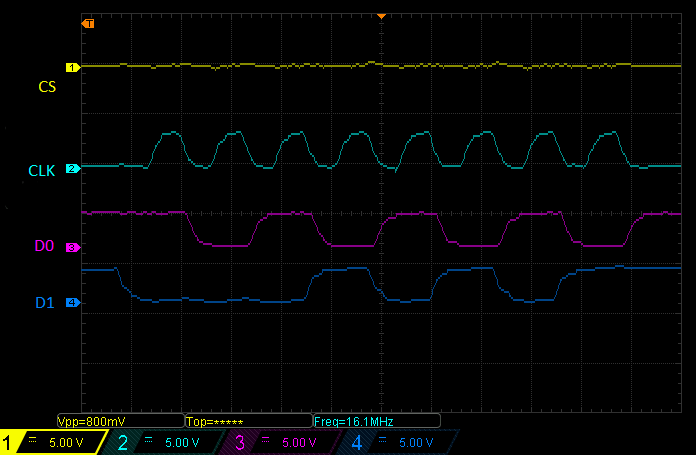
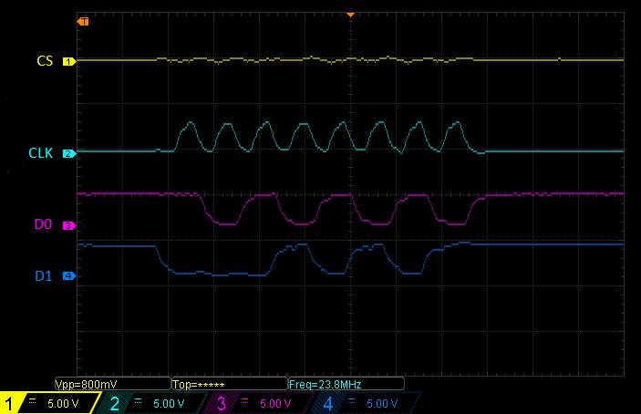
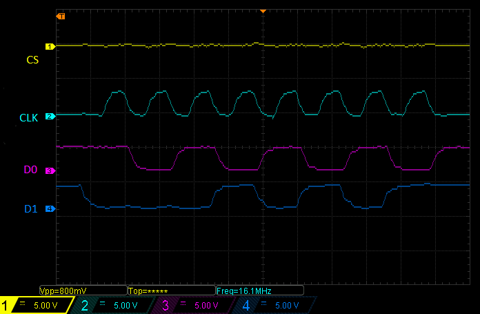
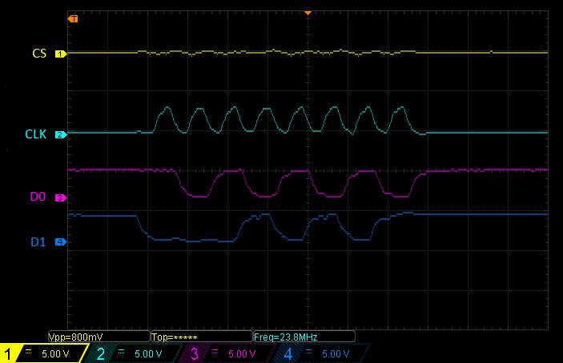

SPI slave driver implementation. The task is to create a driver controlling SPI hardware controller in slave mode, and to ensure optimal performance through the use of DMA and interrupt. Creating an easy to implement realization of SPI slave would definitely help the BeagleBone community members to write applications based on SPI much more easily. The first implementation of my protocol driver is going to example of a bidirectional data exchange. This application will provide the BeagleBone community with valuable experience and will be a good example of SPI slave. Hardware limitations make it impossible to perform any realization of the device using SPI slave. Sending away data to the master during one transaction is not possible. One transaction is enough to receive data by slave device. To receive and send back data, two transactions are needed. The data received from master device in a single transaction is transferred to the user after completing the transaction. The user's reply to received data is sent in the next transaction.

The framework in Linux should have 3 layers. In this way, there can be low level hardware interfaces to SPI hardware like McSPI in slave mode, a middle layer of common functions to call by protocol drivers, and then a top protocol driver layer which can be used to implement.

Each week I will devote a few hours to write the documentation.
Before the first week (before 24 May)
Week 1(24 May - 31 May)
Week 2(31 May - 07 June)
Week 3(07 June - 14 June)
Week 4(14 June - 21 June)
Week 5(21 June - 28 June)
Week 6(28 June - 05 July)
Week 7(05 July - 12 July)✔
Week 8(12 July - 17 July)
Week 9(19 July - 26 July)
Week 10(26 July - 02 August)
Week 11(02 August - 09 August)
Week 12(09 August - 20 August)

 



$ sudo apt-get update -qq
$ sudo apt-get install bc
$ apt-get install gcc-arm-linux-gnueabi
$ wget -c https://releases.linaro.org/components/toolchain/binaries/5.3-2016.02/arm-linux-gnueabihf/gcc-linaro-5.3-2016.02-x86_64_arm-linux-gnueabihf.tar.xz
$ tar xf gcc-linaro-5.3-2016.02-x86_64_arm-linux-gnueabihf.tar.xz
$ export CC=`pwd`/gcc-linaro-5.3-2016.02-x86_64_arm-linux-gnueabihf/bin/arm-linux-gnueabihf-
$ git clone git@github.com:pmezydlo/SPI_slave_driver_implementation.git
$ cd SPI_slave_driver_implementation/
$ git checkout
$ ssh root@192.168.7.2
$ uname -r
4.4.8-ti-r22
$ export SOURCE_BRANCH="4.4.8"
$ export SOURCE_VERSION="ti-r22"
$ export SOURCE_REPO="linux-stable-rcn-ee"
$ export SOURCE_LOCATION="https://github.com/RobertCNelson"
$ wget "$SOURCE_LOCATION/$SOURCE_REPO/archive/$SOURCE_BRANCH-$SOURCE_VERSION.tar.gz"
$ tar xf $SOURCE_BRANCH-$SOURCE_VERSION.tar.gz
$ export DST_KERNEL=$PWD/$SOURCE_REPO-$SOURCE_BRANCH-$SOURCE_VERSION
$ cd $DST_KERNEL
$ make -j3 mrproper ARCH=arm CROSS_COMPILE=$(CC) LOCALVERSION=-$SOURCE_VERSION
$ wget -c "http://rcn-ee.net/deb/jessie-armhf/v$SOURCE_BRANCH-$SOURCE_VERSION/defconfig" -O .config
$ make -j3 modules ARCH=arm CROSS_COMPILE=$(CC) LOCALVERSION=-$SOURCE_VERSION 2>&1
make KDIR=$DST_KERNEL ARCH=arm CROSS_COMPILE=$(CC) LOCALVERSION=-$SOURCE_VERSION
$ modinfo driver/spi-mcspi-slave.ko
filename: /home/pmezydlo/BeagleBoard_work/SPI_slave_driver_implementation/driver/spi-mcspi-slave.ko
version: 1.0
description: SPI slave for McSPI controller.
author: Patryk Mezydlo,
license: GPL v2
srcversion: 469EA334B14612EBD6F0463
alias: of:N*T*Cti,omap4-mcspi*
depends:
vermagic: 4.4.8-ti-r22 SMP mod_unload modversions ARMv7 thumb2 p2v8
$ mount /dev/mmcblk0p1 /mnt/card
$ nano /mnt/card/uEnv.txt
$ optargs=quiet capemgr.disable_partno=BB-BONELT-HDMI,BB-BONELT-HDMIN
Ctrl-X, Y
$ umount /mnt/card
$ shutdown -r now
$ cat /sys/devices/bone_capemgr.*/slots
$ nano /etc/modprobe.d/spi_omap2_mcspi.conf
blacklist spi_omap2_mcspi
Ctrl-X, Y
$ shutdown -r now
$ wget -c https://raw.githubusercontent.com/RobertCNelson/tools/master/pkgs/dtc.sh
$ chmod +x dtc.sh
$ ./dtc.sh
$ cd DTS/
dtc -O dtb -o SPI0_slave-00A0.dtbo -b 0 -@ SPI0_slave.dts
$ scp driver/spi-mcspi-slave.ko root@192.168.137.2:/root
$ scp slave_app/slave_app root@192.168.137.2:/root
$ scp DTS/SPI0_slave-00A0.dtbo root@192.168.137.2:/lib/firmware
echo SPI0_slave>/sys/devices/platform/bone_capemgr/slots
$ cat /sys/devices/platform/bone_capemgr/slots
0: PF---- -1
1: PF---- -1
2: PF---- -1
3: PF---- -1
5: P-O-L- 0 Override Board Name,00A0,Override Manuf,SPI0_slave
$ cat /proc/interrupt
172: 3 INTC 65 Level spi-mcspi-slave
insmod spi-mcspi-slave.ko
$ lsmod
Module Size Used by
spi_mcspi_slave 10781 0
./slave_app --w --r
One AM335x processor contains two McSPI controllers, what allows to use one controller as slave and the other as master. This allows to carry out tests on one board.

The second option is to use two boards where one works as master and the other as slave.